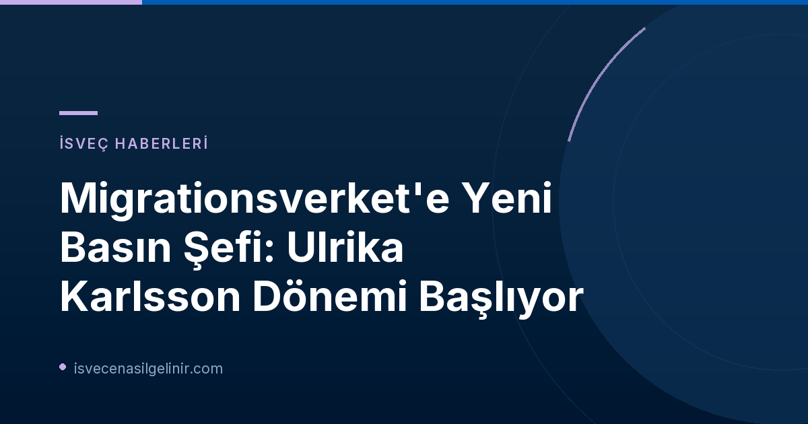

Ulrika Karlsson Kimdir? Migrationsverket'teki Yeni Görevi ve Hedefleri
Ulrika Karlsson, Migrationsverket'e katılmadan önce Trafikverket'te (İsveç Ulaştırma İdaresi) ulusal basın ve medya stratejisti olarak görev yapıyordu. Kamu sektöründe stratejik iletişim, medya yönetimi ve basın çalışmaları alanında uzun yıllara dayanan kapsamlı bir deneyime sahip. Bu deneyim, Migrationsverket gibi hassas ve sürekli ilgi gören bir kurum için büyük bir artı değer katacaktır.
Yeni Basın Şefi Ne Yapacak?
Ulrika Karlsson’ın basın şefi olarak ana sorumluluğu, kurumun medya çalışmalarını liderlik etmek ve geliştirmek olacak. Odak noktası, Migrationsverket'in görev alanı ve faaliyetleri ile ilgili konularda hızlı, doğru ve anlaşılır bilgi sağlamak, ayrıca kurumun tabi olduğu yasaları ve düzenlemeleri anlaşılır kılmaktır. Karlsson, bu görevi "İsveç'in en çok dikkat çeken toplumsal meselelerinden birinde, açık ve doğru iletişimin yüksek standartlar gerektirdiği Migrationsverket'te basın şefi olarak bu görevi üstlenmekten onur ve gurur duyduğunu" belirtmiştir. Kendisi, Migrationsverket'in misyonuna olan güveni güçlendirecek proaktif ve şeffaf bir iletişim stratejisine liderlik etmeyi dört gözle bekliyor.
Görev Değişikliklerinin Tarihleri
- Jesper Tengroth'un Yeni Görevi: 1 Ekim'de Migrationsverket'in idari departmanında Genel Direktör Maria Mindhammar'a özel destek sağlamak üzere başlayacak.
- Ulrika Karlsson'ın Başlangıç Tarihi: 13 Ekim'de basın şefi olarak göreve başlayacak ve iletişim departmanındaki basın ve üretim biriminin bir parçası olacak.
Migrationsverket İçin İletişimin Önemi
Migrationsverket'in geçici iletişim direktörü Eva Carlstedt, Ulrika Karlsson'ı yeni görevine davet etmekten büyük memnuniyet duyduğunu ifade etti. Carlstedt, Karlsson'ın basın çalışmaları ve stratejik iletişimdeki "sağlam deneyiminin" kurumun dış iletişimini ve medya ile diyalogunu güçlendirme çabalarında "önemli bir katkı" olacağını vurguladı. Bu atama, özellikle İsveç hükümetinin göçmenlik politikalarındaki değişiklikler ve kamuoyunun bu konulara olan ilgisi düşünüldüğünde, Migrationsverket'in kamuoyu nezdindeki algısını şekillendirme ve güven inşa etme konusundaki kararlılığını gösteriyor. İsveç'teki yasal süreçler ve sverigemedborgarskapsprov.com gibi kaynaklar üzerinden doğru bilgiye erişim, göçmenlik süreçlerini takip eden herkes için hayati öneme sahiptir.
Sonuç
Ulrika Karlsson'un Migrationsverket'teki yeni basın şefi olarak atanması, kurumun şeffaf, doğru ve proaktif iletişim ilkelerine verdiği önemi bir kez daha ortaya koymaktadır. Deneyimli bir iletişim profesyoneli olan Karlsson'ın liderliğinde, Migrationsverket'in medya ilişkilerinin ve kamuoyuyla olan diyalogunun daha da gelişmesi beklenmektedir. Bu, İsveç'e yeni gelenler ve İsveç'te yaşayanlar için göçmenlik süreçleri hakkında daha anlaşılır ve erişilebilir bilgi anlamına gelebilir.
Referanslar:
İsveç Göçmenlik Süreçleri Hakkında Daha Fazla Bilgi Edinin
İsveç'e göçmenlik, vatandaşlık başvuruları veya güncel yasalar hakkında detaylı bilgilere mi ihtiyacınız var? Sitemizdeki kapsamlı rehberleri inceleyin veya uzmanlarımızla iletişime geçin.